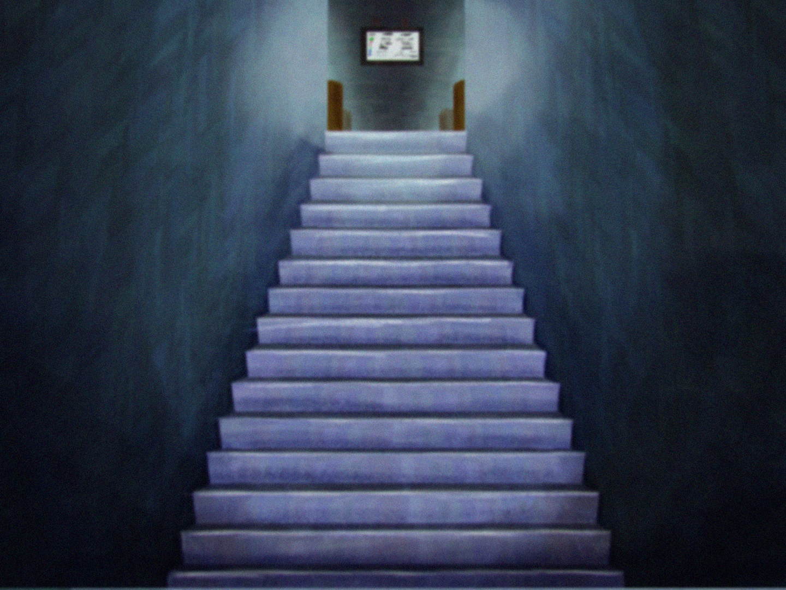
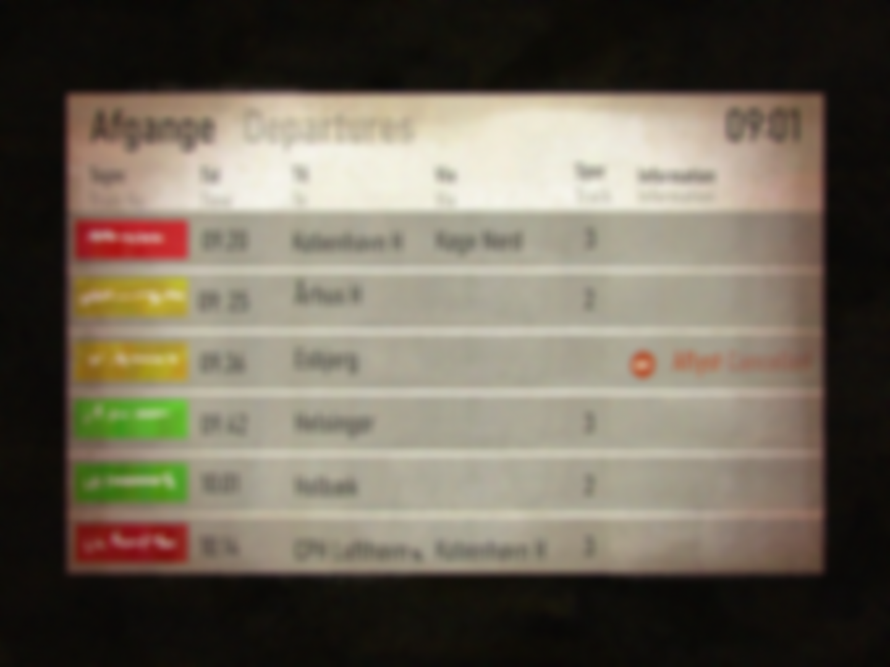
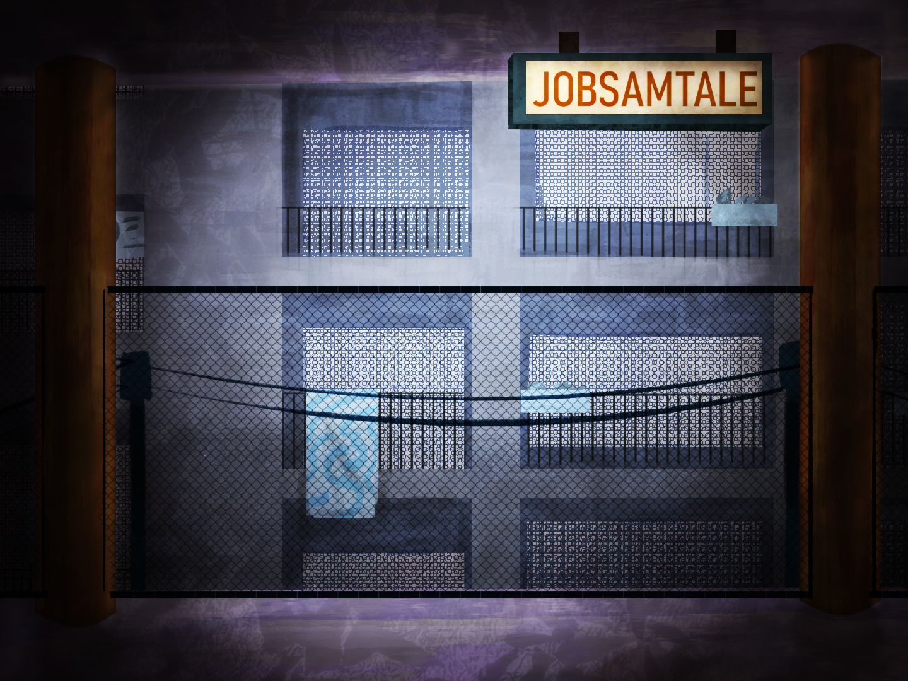

Jobsamtalen

Credits
ART
Tak til Ara for det smukke stykke arbejde med baggrunde, karaktere og yderligere assets
LYD
Tak til Johan for den fantastiske musik og SFX, der er med til at fremhæve stemningen i spillet
KODE
Tak til Marie for det fine stykke arbejde med koden og historien



Ending A
Er du kommet for sent?
Du forsøgte, at nå jobsamtalen til tiden... Måske kan du stadig nå det, hvis du løber?
Hvad der skete
- Du kan høre, hvordan dit hjerne hamre i brystet på dig. Det sortner for øjnene, og du er kommet for sent til jobsamtalen. Du bliver nødt til at tage på hospitalet, da du har ondt i hjertet og har svært ved at holde dig oppe.
- Du har hjertebanken, er svimmel og har svært ved at holde dig stående. Du løber alligevel hen mod jobsamtalen, men du når det ikke.
- Du løber hen til stedet for din jobsamtale, og du når det! De var heldigvis forsinkede med deres samtaler.
- Du kommer ud af toget og ser dig omkring. Mængden af mennesker føles som sorte skygger, der alle ser mod dig. Du mærker hvordan vinden tager fat i huden på dig og hvordan dit hjerte banker højere og højere. Du kan ikke længere styre din vejrtrækning. Svedperler samler sig på din ryg, og lyden af støj omkring dig bliver tydeligere. Øjne, der går forbi, griner, din hals trækker sig sammen, og du hiver efter vejret. Det eneste du hører er dit eget hjerteslag.
Ending B
Kan du stadig nå det?
Du forsøger at nå hen til stedet for din jobsamtale.
Hvad der skete
- Du gjorde dit bedste og fortsætter over til jobsamtalen. Du når det lige til tiden! Heldigt at du er så hurtig til at løbe.
- Du gjorde dit bedste og fortsætter over til jobsamtalen. Du kommer dog for sent, og de vil ikke lukke dig ind.
- Du kommer ud af toget og ser hen mod stedet for din jobsamtale. Du har hovedpine og pletter for øjnene, men begynder at gå. Din hovedpine tager til, dit hjerte niver og tårerne triller ned af dine kinder.
- Du stiger ud af toget og ser dig omkring. Svimmelhed og intens smerte i hjertet tager til. Du mærker, hvordan en let hovedpine langsomt bevæger sig op over dit øje, og hvordan en tåre triller ned ad din ene kind. Lidt henne af perronen ser du togføreren. Han ser hen mod dig med et bekymret ansigtsudtryk. Det sortner for øjnene, og du hører et svagt råb. Med det, går det op for dig, at du er togkontrolløren.
Ending C
Hvordan var togrejsen?
Du ser dig omkring efter, at du er ankommet til endestationen. Kan du stadig nå jobsamtalen?
Hvad der skete
- Du gjorde dit bedste og fortsætter over til jobsamtalen. Du når det lige til tiden! Heldigt at du er så hurtig til at løbe.
- Du gjorde dit bedste og fortsætter over til jobsamtalen. Du kommer dog for sent, og de vil ikke lukke dig ind.
- Du kommer ud af toget og ser hen mod stedet for din jobsamtale. Du har hovedpine og pletter for øjnene, men begynder at gå. Din hovedpine tager til, dit hjerte niver og tårerne triller ned af dine kinder.
- Du stiger ud af toget og ser dig omkring. Svimmelhed og intens smerte i hjertet tager til. Du mærker, hvordan en let hovedpine langsomt bevæger sig op over dit øje, og hvordan en tåre triller ned ad din ene kind. Lidt henne af perronen ser du togføreren. Han ser hen mod dig med et bekymret ansigtsudtryk. Det sortner for øjnene, og du hører et svagt råb. Med det, går det op for dig at du er togkontrolløren.
Ending D
Jobsamtalen venter på dig, men kan du nå det?
Du mærker dit hjerte banke i brystet på dig. Omkring perronen strømmer det med travle mennesker. Det eneste, som du kan tænke på, er om du stadig kan nå jobsamtalen.
Hvad der skete
- Du kan høre, hvordan dit hjerne hamre i brystet på dig. Det sortner for øjnene, og du er kommet for sent til jobsamtalen. Du bliver nødt til at tage på hospitalet, da du har ondt i hjertet og har svært ved at holde dig oppe.
- Du har hjertebanken, er svimmel og har svært ved at holde dig stående. Du løber alligevel hen mod jobsamtalen, men du når det ikke.
- Du løber hen til stedet for din jobsamtale og når det! De var heldigvis forsinkede med deres samtaler.
- Du kommer ud af toget og ser dig omkring. Mængden af mennesker føles som sorte skygger, der alle ser mod dig. Du mærker, hvordan vinden tager fat i huden på dig, og hvordan dit hjerte banker højere og højere. Du kan ikke længere styre din vejrtrækning. Svedperler samler sig på din ryg og lyden af støj omkring dig bliver tydeligere. Øjne, der går forbi, griner, din hals trækker sig sammen, og du hiver efter vejret. Det eneste, som du hører, er dit eget hjerteslag.
Debug
Live state
Current scene: none
{}
Narrator
klik for at starte.